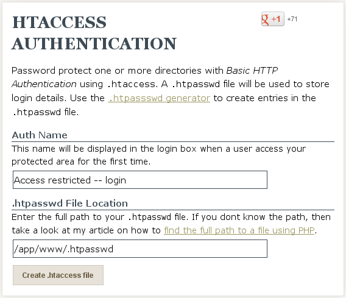

Heroku provides a free web application deployment services, integrated with the Cloud9 development environment through Git and GitHub. Following is a brief outline for configuring and deploying a project on Heroku.
Open a project in Cloud9
In the Cloud9 Project, choose View ‣ Console from the menu
At the console command line, type:
c9pm install heroku
To make sure that your install was successful, and to get ready to use heroku, run the following command in your Terminal:
heroku login
Enter your heroku username and password when prompted.
Open a project in Cloud9
In the Cloud9 Project, choose View ‣ Console from the menu
At the console command line, type:
heroku create
This will create a heroku server for your app, and configure your git repository with a remote location where you can deploy your app.
To see the new git heroku deployment branch, type:
git remote -v
Open in a new browser tab, and bookmark, the url of your new heroku server, which you will see in the output of the heroku create command. The URL will look similar to this:
random-word-1234.herokuapp.com
After making changes to the project in Cloud9 and pushing to the GitHub repository, deploy changes on Heroku with the additional command:
bash doc-deploy.sh
Now you can view your live site at your heroku server URL (which you bookmarked earlier).
Note
Did you notice? the doc-deploy.sh deployment command file was the same for either gh-pages on GitHub or heroku. Curious students should open this program in the editor and investigate this piece of magic.
Ordinarily Heroku rejects static HTML sites and refuses the deployment, because Heroku is designed to host dynamic web applications instead. Heroku is tricked into hosting the Sphinxdoc HTML as if it were a PhP site by the presence of two files, generated by the doc-newproject.sh script:
touch _static/index.php
echo 'php_flag engine off' > _static/.htaccess
This deployment idea is courtesy Kenneth Reitz [1]. Other techniques for making static deployments using special packs for Ruby or PHP are mentioned in the references. [2] [3] [4]
GitHub’s gh-pages provides free deployment for static sites comprised of HTML pages. HTML itself does not provide security mechanisms for private sites, however; this is a web server function which requires dynamic site deployment.
User authentication and site security in a web application generally depends on computer language libraries, server configuration files, and a host of other stuff specific to the project. However, practically every web server supports basic access authentication through configuration file .htaccess. [5] Used properly, this will provide what is referred to as “Pretty Good Privacy” (PGP).
By combining Bitbucket private repository hosting with dynamic deployment on Heroku, we can develop and test static and dynamic projects in the cloud with privacy. Here is how:
Open project file _static/.htaccess in your editor. It should contain one line, php_flag engine off, as described previously.
Open site htaccess authentication in a separate browser tab. [6]
Type an authentication message in Auth Name.
Type /app/www/.htpasswd in .htpasswd File Location.
Click the button, Create .htaccess file.
Select the text on the resulting page, copy it, and paste it into file .htaccess below the existing command.
The resulting text in .htaccess should look like:
php_flag engine off
AuthType Basic
AuthName "Access restricted - login"
AuthUserFile /app/www/.htpasswd
Require valid-user
Save the _static/.htaccess file.
Note
If you are having trouble finding the .htaccess file, you may have forgotten that files starting with a dot (.) are hidden. Remember to show hidden files.
Create a new text file in folder _static, name it .htpasswd, and open it in the editor.
Use htaccess passwords generator to create Username:Password strings.
Copy each created string and paste it into .htpasswd, one string per line.
Save the file _static/.htaccess into your project.
Deploy your project to Heroku with the doc-deploy.sh command. Then display the running app in the web browser. You should be asked for authentication credentials.
Footnotes
| [1] | Kenneth Reitz, Static sites on heroku cedar, http://kennethreitz.org/exposures/static-sites-on-heroku-cedar. |
| [2] | Guillermo Garron, Hosting jekyll site for free on heroku, http://www.garron.me/blog/deploy-host-jekyll-static-site-free-heroku.html. |
| [3] | Static build pack |
| [4] | Static article |
| [5] | Linked from Wikipedia, Basic access authentication. |
| [6] | Andreas Gehrke, web service linked at .htaccess Tools. |